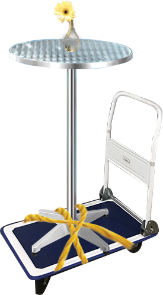

Make It A Party Wherever You Go is a project responding to a current issue about urban public space in Melbourne. This project includes an urban intervention
(a party table) and a printed publication as a response.
The party table allows people to gather and socialise in public space— turning any space into great social places. The intervention consists of a bar table on a trolley, complemented with a flower in a vase, an ashtray, two coat hangers and an instruction sheet.

“A good city is like a good party— People stay longer than really necessary, because they are enjoying themselves.”— Jan Gehl
Public spaces are an important part of our cities as they provide opportunities for people to gather and engage with the community. However, things are a bit different in the Australian context. Throughout history, under the influence of European colonisation, the Melbourne city was never designed to encourage sociality in public space as such could promote rebellion. As a result, people claiming spaces in alleyways, corners and car parks as their social public space, has becomes a “normal” part of our urban social life.
As a response to this issue,
Make It A Party Wherever You Go aims to increase people’s awareness of their physical surroundings and hopes to encourage and promote interaction with the urban public space.
2019
view images